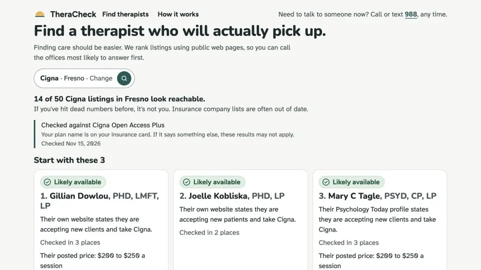

TheraCheck
Calling down an insurer's therapist directory often means reaching outdated listings. TheraCheck puts listings with evidence of availability first and shows the pages behind each result. We built it at SanD Hacks Fall 2026.
- Result
- A deployed demo with 300 Cigna listings across 6 California cities. The six-city collection run found web evidence for 104 listings; a repeat directory run inserted no duplicates.
- What I did
- I set up the app, database contract, and scoring, then built the Bright Data directory and evidence collectors, NPI lookups, California license matching, and the queued re-check worker.
- Stack
- Next.js 16, React 19, TypeScript, Bright Data, Gemini, Neon Postgres, ElevenLabs, Vitest, Playwright, Vercel
- Team
- Waleed Alghaithi, Aditya Jadhav, and Tracy (Qinggin) · November 14–15, 2026
The problem
An insurance directory can say a therapist is in-network even when the therapist has moved, stopped taking the plan, or closed to new patients. We wanted people to see which listings have supporting evidence before spending time calling.
What it does
- Search Cigna listings in six California cities and filter by specialty, language, and video sessions.
- Read a one-line explanation, follow evidence links, and check California license status and posted fees.
- Open a listing to request a fresh evidence check, follow a booking link, or call the office yourself.
- Use the voice assistant to demonstrate an insurance and availability check with a teammate's phone, or share the top results without an account.

How it works
Bright Data reads the insurer directory and searches for each therapist's own pages. Gemini extracts structured facts about whether the therapist is still practicing, lists the insurer, and accepts new patients. A deterministic score ranks those facts; missing evidence stays unknown. Listings, evidence, verdicts, and call results live in Neon Postgres.
Collection and verification run outside page requests. The web app reads stored results and queues re-checks. A worker claims a queued job with PostgreSQL row locking, collects new evidence, and runs verification. If no new evidence is found, it keeps the previous result and marks the job failed rather than presenting stale evidence as a fresh check.
My part
- App and data contract. Set up the Next.js app, shared types, database schema, scoring function, and fixtures.
- Directory collection. Built the Bright Data client and Cigna collector with NPI Registry lookups, then ran it for 50 listings in each of six cities. Added city to the listing identity so a clinician with offices in several cities keeps a separate listing in each.
- Evidence collection. Built the page collector with checks that a page belongs to the same person, using name, location, and board-confirmed license numbers. The six-city run found evidence for 104 of 300 listings.
- License matching. Matched California DCA public licensee files using NPI or profile license numbers, with a name-and-location fallback. The recorded run matched 75 of 300 listings; I also hand-checked five records on the DCA site.
- Re-checks. Built the queued worker, stale-job cleanup, and the failure path that preserves the last result when a new run finds nothing. I also wrote the final project scope and README.
Limits
The ranking has not been validated against real offices. Public pages may be incomplete or old, and a high score does not confirm insurance coverage or an open appointment. At submission, 45 of 50 San Diego listings were Unclear. Assistant calls are staged to allow-listed teammates' phones; they do not verify real offices. The demo covers Cigna in California.